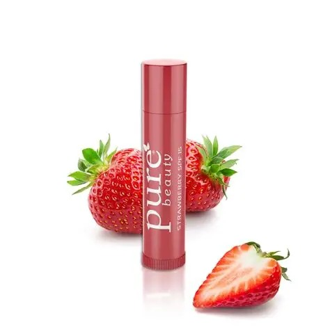
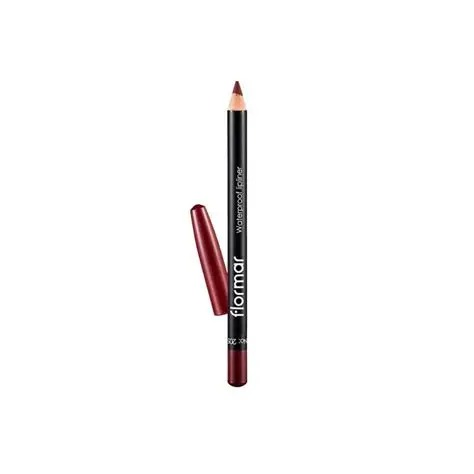
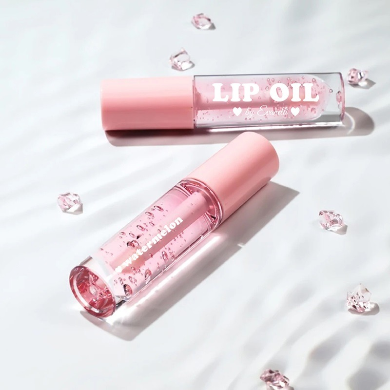

It adds color to the lips, enhances their appearance
and gives a finished and attractive look to the makeup.

It keeps the lips hydrated, prevents dryness and cracking and makes the lips soft and smooth
It also helps protect the lips from harsh weather conditions like cold and sun.

It defines the shape of the lips, prevents lipstick
from bleeding, and can make the lips look fuller.

It gives shine to the lips, makes them
look more hydrated, and adds a soft, fresh appearance.
